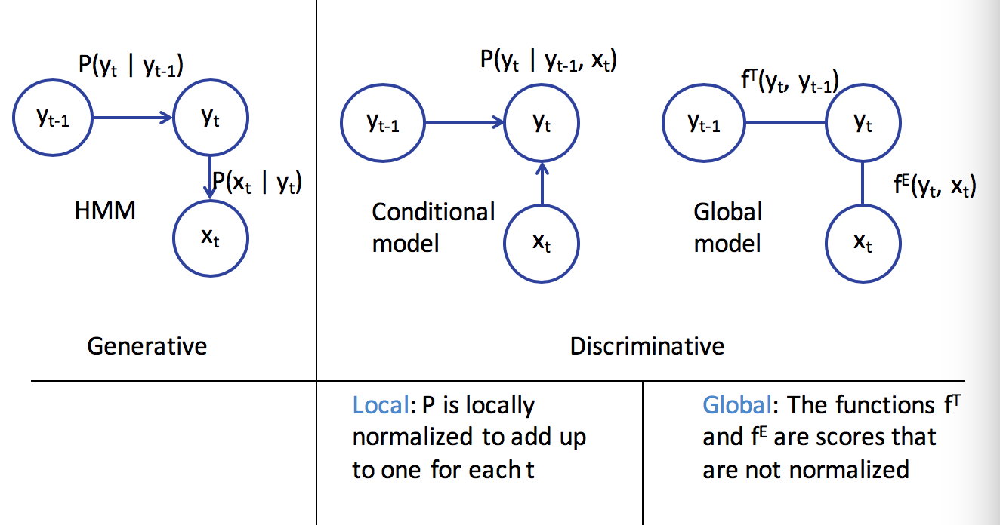

5.4. structure learning¶
5.4.1. introduction¶
structured prediction - have multiple independent output variables
output assignments are evaluated jointly
requires joint (global) inference
can’t use classifier because output space is combinatorially large
three steps
model - pick a model
learning = training
inference = testing
representation learning - picking features
usually use domain knowledge
combinatorial - ex. map words to higher dimensions
hierarchical - ex. first layers of CNN
5.4.2. structure¶
structured output can be represented as a graph
outputs y
inputs x
two types of info are useful
relationships between x and y
relationships betwen y and y
complexities
modeling - how to model?
train - can’t train separate weight vector for each inference outcome
inference - can’t enumerate all possible structures
need to score nodes and edges
could score nodes and edges independently
could score each node and its edges together
5.4.3. sequential models¶

5.4.3.1. sequence models¶
goal: learn distribution \(P(x_1,...,x_n)\) for sequences \(x_1,...,x_n\)
ex. text generation
discrete Markov model
\(P(x_1,...,x_n) = \prod_i P(x_i \vert x_{i-1})\)
requires
initial probabilites
transition matrix
mth order Markov model - keeps history of previous m states
each state is an observation
5.4.3.2. conditional models and local classifiers - discriminative model¶
conditional models = discriminative models
goal: model \(P(Y\vert X)\)
learns the decision boundary only
ignores how data is generated (like generative models)
ex. log-linear models
\(P(\mathbf{y\vert x,w}) = \frac{exp(w^T \phi (x,y))}{\sum_y' exp(w^T \phi (x,y'))}\)
training: \(w = \underset{w}{argmin} \sum log \: P(y_i\vert x_i,w)\)
ex. next-state model
\(P(\mathbf{y}\vert \mathbf{x})=\prod_i P(y_i\vert y_{i-1},x_i)\)
ex. maximum entropy markov model
\(P(y_i\vert y_{i-1},x) \propto exp( w^T \phi(x,i,y_i,y_{i-1}))\)
adds more things into the feature representation than HMM via \(\phi\)
has label bias problem
if state has fewer next states they get high probability
effectively ignores x if \(P(y_i\vert y_{i-1})\) is too high
ex. conditional random fields=CRF
a global, undirected graphical model
divide into factors
\(P(Y\vert x) = \frac{1}{Z} \prod_i exp(w^T \phi (x,y_i,y_{i-1}))\)
\(Z = \sum_{\hat{y}} \prod_i exp(w^T \phi (x,\hat{y_i},\hat{y}_{i-1}))\)
\(\phi (x,y) = \sum_i \phi (x,y_i,y_{i-1})\)
prediction via Viterbi (with sum instead of product)
training
maximize log-likelihood \(\underset{W}{max} -\frac{\lambda}{2} w^T w + \sum log \: P(y_I\vert x_I,w)\)
requires inference
linear-chain CRF - only looks at current and previous labels
ex. structured perceptron
HMM is a linear classifier
5.4.4. constrained conditional models¶
5.4.4.1. consistency of outputs and the value of inference¶
ex. POS tagging - sentence shouldn’t have more than 1 verb
inference
a global decision comprising of multiple local decisions and their inter-dependencies
local classifiers
constraints
learning
global - learn with inference (computationally difficult)
5.4.4.2. hard constraints and integer programs¶

5.4.4.3. soft constraints¶

5.4.5. inference¶
inference constructs the output given the model
goal: find highest scoring state sequence
\(argmax_y \: score(y) = argmax_y w^T \phi(x,y)\)
naive: score all and pick max - terribly slow
viterbi - decompose scores over edges
questions
exact v. approximate inference
exact - search, DP, ILP
approximate = heuristic - Gibbs sampling, belief propagation, beam search, linear programming relaxations
randomized v. deterministic
if run twice, do you get same answer
ILP - integer linear programs
combinatorial problems can be written as integer linear programs
many commercial solvers and specialized solvers
NP-hard in general
special case of linear programming - minimizing/maximizing a linear objective function subject to a finite number of linear constraints (equality or inequality)
in general, \( c = \underset{c}{argmax}\: c^Tx \) subject to \(Ax \leq b\)
maybe more constraints like \(x \geq 0\)
the constraint matrix defines a polytype
only the vertices or faces of the polytope can be solutions
\(\implies\) can be solved in polynomial time
in ILP, each \(x_i\) is an integer
LP-relaxation - drop the integer constraints and hope for the best
0-1 ILP - \(\mathbf{x} \in \{0,1\}^n\)
decision variables for each label \(z_A = 1\) if output=A, 0 otherwise
don’t solve multiclass classification with an ILP solver (makes it harder)
belief propagation
variable elimination
fix an ordering of the variables
iteratively, find the best value given previous neighbors
use DP
ex. Viterbi is max-product variable elimination
when there are loops, require approximate solution
uses message passing to determine marginal probabilities of each variable
message \(m_{ij}(x_j)\) high means node i believes \(P(x_j)\) is high
use beam search - keep size-limited priority queue of states
5.4.6. learning protocols¶
5.4.6.1. structural svm¶
\(\underset{w}{min} \: \frac{1}{2} w^T w + C \sum_i \underset{y}{max} (w^T \phi (x_i,y)+ \Delta(y,y_i) - w^T \phi(x_i,y_i) )\)
5.4.6.2. empirical risk minimization¶
subgradients
ex. \(f(x) = max ( f_1(x), f_2(x))\), solve the max then compute gradient of whichever function is argmax
5.4.6.3. sgd for structural svm¶
highest scoring assignment to some of the output random variables for a given input?
loss-augmented inference - which structure most violates the margin for a given scoring function?
adagrad - frequently updated features should get smaller learning rates